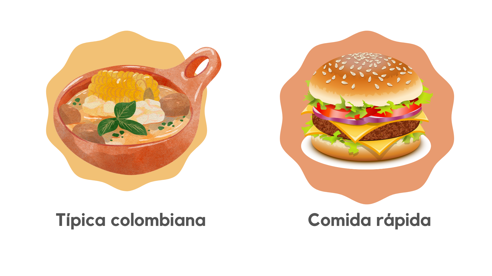
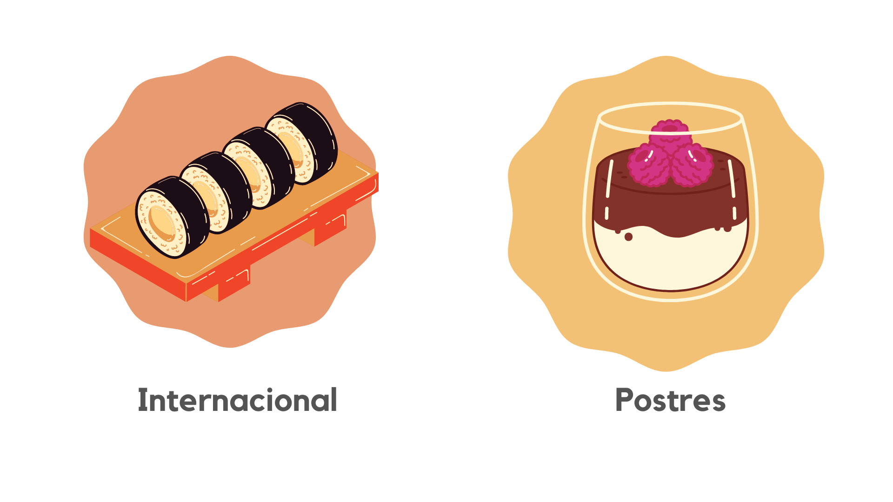

FoodMap es una compañía que día tras día te facilita la vida. Te presentamos el más completo catálogo de restaurantes, para que decidas comer delicioso en cualquier momento y con las personas que más amas. Todos los restaurantes cuentan con calificaciones reales, hechas por personas como tú, personas que aman y disfrutan de los placeres de una buena comida.
Conoce nuestras categorías
 